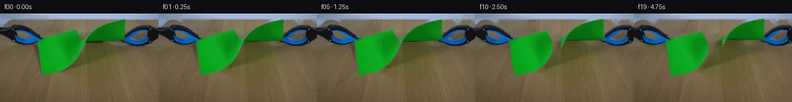

![首帧]()

Round 00
2026-11-04T22:22:22.840865+00:00像素候选变化代码 +222/−0inspection 更新
pixels b88c2f98fe2c2086 · code fca16e4a0d1b3ed5
查看本轮 generate.py 真实 diff
--- previous/generate.py +++ current/generate.py @@ -0,0 +1,222 @@ +from pathlib import Path + +import cv2 +import numpy as np +from PIL import Image, ImageDraw + +import artifact_io + + +ROOT = Path(__file__).resolve().parent +H, W = 144, 256 + + +def smoothstep(x): + x = np.clip(x, 0.0, 1.0) + return x * x * (3.0 - 2.0 * x) + + +def polygon_mask(points): + out = np.zeros((H, W), np.uint8) + cv2.fillPoly(out, [np.asarray(points, np.int32)], 255) + return out + + +def warp_layer(rgb, alpha, matrix): + """Affine-warp an RGB layer using premultiplied color for clean edges.""" + a = alpha.astype(np.float32) / 255.0 + premul = rgb.astype(np.float32) * a[..., None] + wp = cv2.warpAffine( + premul, matrix, (W, H), flags=cv2.INTER_LINEAR, + borderMode=cv2.BORDER_CONSTANT, borderValue=0, + ) + wa = cv2.warpAffine( + a, matrix, (W, H), flags=cv2.INTER_LINEAR, + borderMode=cv2.BORDER_CONSTANT, borderValue=0, + ) + straight = np.zeros_like(wp) + np.divide(wp, np.maximum(wa[..., None], 1e-5), out=straight, + where=wa[..., None] > 1e-5) + return straight, wa + + +def over(dst, src, alpha): + return dst * (1.0 - alpha[..., None]) + src * alpha[..., None] + + +def make_masks(src): + # Paper alpha comes from green dominance, restricted to the measured sheet ROI. + f = src.astype(np.float32) + dominance = f[..., 1] - np.maximum(f[..., 0], f[..., 2]) + paper_roi = polygon_mask([ + (57, 32), (123, 22), (132, 38), (150, 19), (204, 5), + (205, 47), (143, 51), (121, 77), (96, 96), (65, 103), + ]) > 0 + paper_a = np.clip((dominance - 5.0) / 23.0, 0, 1) * paper_roi + paper_a = cv2.GaussianBlur(paper_a.astype(np.float32), (3, 3), 0.42) + paper_a[paper_a < 0.035] = 0 + + # A deliberately uneven split through the folded neck becomes the torn edge. + yy, xx = np.mgrid[:H, :W] + cut = 131.0 + 1.2 * np.sin(yy * 1.67) + 0.55 * np.sin(yy * 4.31) + left_a = paper_a * (xx <= cut) + right_a = paper_a * (xx > cut) + + # Segment the dark and blue grabbers inside tight silhouette envelopes. + hsv = cv2.cvtColor(src, cv2.COLOR_RGB2HSV) + sat, val = hsv[..., 1], hsv[..., 2] + blue = ((src[..., 2].astype(np.int16) - src[..., 0].astype(np.int16) > 24) & + (src[..., 2] > 62) & (sat > 75)) + dark = val < 78 + neutral_tool = (val < 112) & (sat < 105) + + left_env = polygon_mask([ + (0, 10), (28, 10), (39, 15), (50, 24), (58, 30), (69, 34), + (70, 45), (58, 47), (47, 51), (27, 54), (14, 48), (0, 42), + ]) > 0 + right_env = polygon_mask([ + (256, 10), (229, 10), (218, 15), (207, 24), (199, 30), (190, 34), + (190, 46), (202, 48), (213, 52), (232, 54), (244, 48), (256, 42), + ]) > 0 + tool_pixels = dark | blue | neutral_tool + left_core = (tool_pixels & left_env).astype(np.uint8) * 255 + right_core = (tool_pixels & right_env).astype(np.uint8) * 255 + + # Close tiny holes and feather only the antialiased silhouette boundary. + kernel = np.ones((3, 3), np.uint8) + left_core = cv2.morphologyEx(left_core, cv2.MORPH_CLOSE, kernel) … diff truncated; 135 more lines …